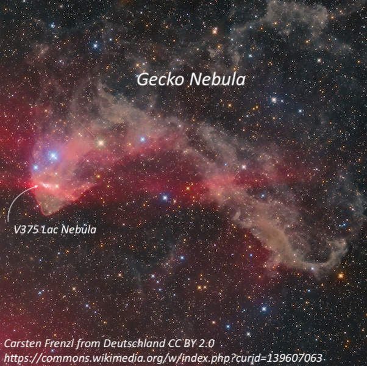
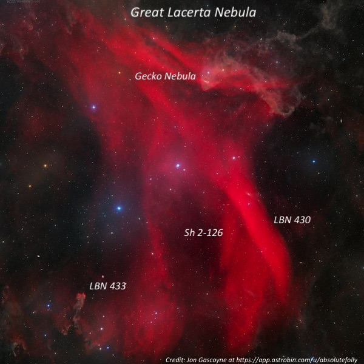
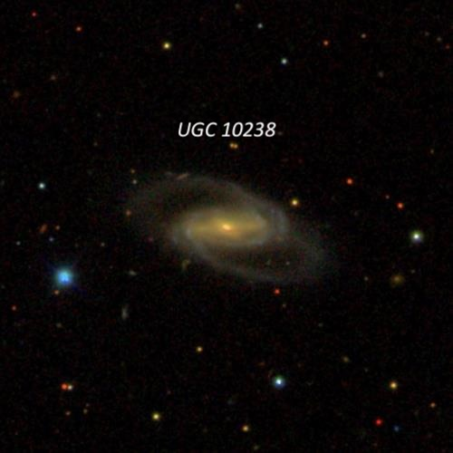
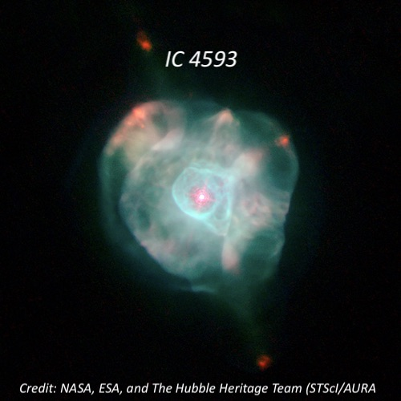
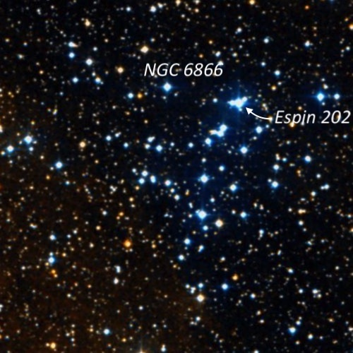

OR: Lake Sonoma on Sep. 7, 2026
After observing last Saturday night (9/6/26) at Lake Sonoma, I wasn’t expecting to return so soon, but Mark McCarthy posted an observing intent for Monday night at the same site. I figured if he can make the drive all the way from Fremont, I can drag my tired self over from much closer Albany. Ziad Khoury also signaled he was interested in returning and the weather forecast seemed positive enough to confirm our plans.
The drive north on 101 as surprisingly light late in the afternoon on Monday (Labor Day), as most of the traffic was returning to the bay area from vacation trips. I exited the highway at Dry Creek road in Healdsburg, and took the scenic route pass the Dry Creek wineries that line this street. I arrived first and found the lot empty, except for a few horse trailers that were parked in the upper portion of the lot. During early twilight, they returned on their horses and left soon afterwards, leaving the lot to just the astronomers.
Mark McCarthy soon arrived and set up two superb sets of equipment — a Tele Vue 101 f/5.4 APO with a new bino-viewer, and his homemade table top mirror mount, which he used with a modified 3x Night Vision monocular and an extremely narrow bandpass 3nm H-alpha filter. After Ziad arrived somewhat later, he discovered a connecting part had broken off his mount and it was unuseable. Mark generously offered use of his 3x night-vision device, while he observed with the 4” refractor.
Nighttime conditions were quite comfortable – fairly warm, with no wind or dew, and zero non-astronomical vehicles visiting the lot. During the night, Emma from Walnut Creek, who was imaging in the upper part of the lot with a friend, walked over a couple of times to our small group and joined in with our observing program. Both were very enthusiastic and excited with the views through the 3x night-vision device, as well as through the telescopes.
I was curious about the state of the Type Ia SN 2026aaiv in NGC 7331 (near Stephan’s Quintet) and I was surprised to find it had brightened a few tenths of a magnitude just in the past two nights. Peering into the eyepiece at 158x, it was immediately obviously as a mag ~13.5 “star” less than 30” SE of the center.
I spent most of the night working on objects in Lacerta (mostly re-observing) as that’s the theme for an article I’m researching for an article next year in Sky & Tel magazine. Mark helped out by providing a couple of great views of a little-known giant complex of gas and dust in Lacerta. The primary ionizing source is 10 Lacertae, a hot, massive, blue O-type star. Late at night, I took a SQM reading and got 21.28 (this is a Bortle 4.0 site), which was slightly lower than Saturday night’s reading (SQM 21.33). Overall, it was a very pleasant and productive evening with several exciting views to share. The following is just a small sample of the objects I observed.
V375 Lacertae Nebula
22 34 41.0 +40 40 04; Lac
Size 3' × 1'
A faint 1’ glow surrounds the young Herbig A4e star V375 Lac = LkHa 233. This bipolar reflection nebula is mostly seen to the west of the star towards mag 8.5 SAO 52153 and is more obvious on the SW side. This nebula forms one of the eyes of the dark “Gecko Nebula”, a fairly large molecular cloud to the west.

Great Lacerta Nebula = Simeis 305 = Sh 2-126 = LBN 428/430/433/437
22 32 +38 50; Lac
Size 210' × 60'
Using Mark McCarthy’s modified 3x Night Vision device (NVD) paired with a 3nm H-alpha filter and his homemade table top mirror mount (an amazing combination for extremeley large regions of nebulosity!), the Great Lacerta Nebula. With this combination the nebula stretched ~5° or more in length from north to south and was brightest along the southwest side (LBN 430). In his Tele Vue 101 with binoviewer and 3nm H-alpha filter, the NVD yielded 8x using a 67mm focal length eyepiece and nearly a 5° field of view! The full southern half (Sh 1-126) of the Great Lacerta Nebula fitted nicely in the field and showed two main streams of nebulosity flowing north-south.

BL Lacertae = QSO B2200+420
22 02 43.3 +42 16 39; Lac
BL Lac was discovered in 1929 by German astronomer Cuno Hoffmeister as a highly variable Milky Way “star” — not as a distant galaxy. It wasn’t until 1968 that John Schmitt of the David Dunlop Observatory in Ontario, Canada noted that BL Lac coincided with the radio source VRO 42.22.01. In 1974 the redshift was measured and it showed that BL Lac is nearly a billion light-years distant! It became the prototype of a category of active galactic nuclei known as blazars, which are low-luminosity quasars with one of their powerful jets pointed directly towards us. It exhibits a slow, irregular variation in magnitude from 12.7 to 16 with brief one-magnitude flares, likely due to the actively feeding black hole at the center and and our view down the throat of its relativistic jet.
I used an AAVSO chart (with comparison mags) to identify the field of BL Lac, which is 9.5' SSE of mag 8.4 HD 209438. The blazar forms a double “star”, just 24" W of a mag 12.9 star. At 226x, it was clearly visible at mag ~14.3 star (appearing stellar).
UGC 10238
16 10 26.5 +12 18 20; Serpens
V = 14.1; Size 1.4' × 0.7'; PA = 70°
With a blue magnitude of 15.0, this 500-million-light-year distant galaxy was very faint and diffuse with low even surface brightness. Although it required averted vision, I could tell it was an oval 3:2 E-W, ~0.6' × 0.4'. The compact planetary nebula IC 4593 is 24' SE.

IC 4593 = White-Eyed Pea Nebula
16 11 44.5 +12 04 17; Hercules
V = 10.7; Size 13"x10"
I wasn’t planning to observe this planetary (I’ve logged a half-dozen previous observations), but it just so happens to be in the field of UGC 10238 above! At 158x, it appeared as a bright, very small, bluish disc that was clearly non-stellar. Increasing to 395x, it was slightly elongated ~N-S and the bright central star was visible in moments of good seeing.

NGC 6866
20 03 55 +44 09 30; Cygnus
V = 7.6; Size 15'
Caroline Herschel discovered NGC 6866 on July 23, 1783 using her 4.2" comet-sweeper reflector – it was her first discovery with this telescope! She noted "Some small stars; or perhaps a Nebula." and entered it as #7 in her discovery log. Her brother William viewed the cluster 3 months later with his 6.2” reflector and Caroline wrote in her log, "My brother shewed me the spot in Cygnus, which I saw first July 23, the stars very numerous, and intermixed with strong nebulosity. Messier has it not."
I found it a rich, excellent cluster at 132x and 226x, with about 50 stars resolved in the central part including several pairs. Many of the stars are in generally E-W stream. A triple star (known as Espin 202) just N of center, consists of a mag 10.5 primary and two mag 12.5/13.1 companions at 11". A faint mag 14.5 star is 0.6' E. Another trio of stars is just 1’ SE and a small clump of 3-4 stars is 3' SE of ES 85.
